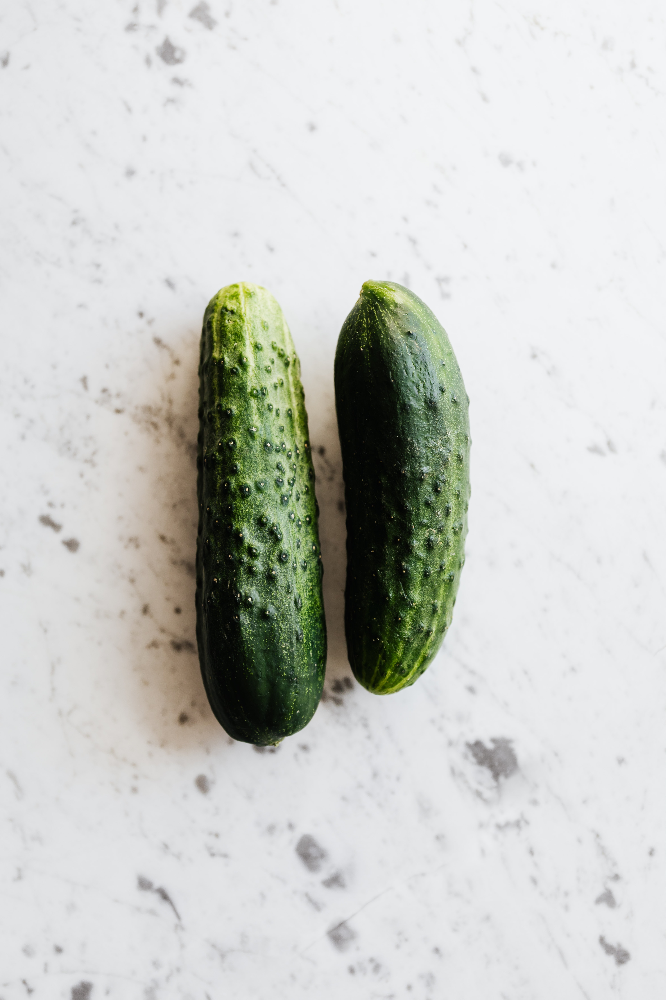

Краставицата (Cucumis sativus) е едногодишно двусемеделно растение от семейство Тиквови. Съдържа голямо количество вода и е много разпространена. Семената са бели, с дължина до 1 сантиметър.
История
Краставицата е култивирана в Индия преди около 3000 години. Предполага се, че е пренесена в Европа от Александър Македонски. Ранните изследователи и туристи са пренесли краставиците в Индия и други части на Азия. Те са били много популярни в древните цивилизации на Египет, Гърция и Рим, които са ги използвали не само като храна, но също така и поради благоприятните им за кожата лечебни свойства. Отглеждането на краставици в оранжерии е било въведено по времето на Луи XIV. Ранните колонизатори от своя страна са пренесли краставиците в Съединените щати.
В България
Засажда се в началото на май и се бере през август. Известни сортове са „Сандра“ и „Гергана“. Сред тях важно място заемат и дребните краставички, наречени корнишони. Известни сортове от тях са „ТОНИ“ и „Деликатес“.